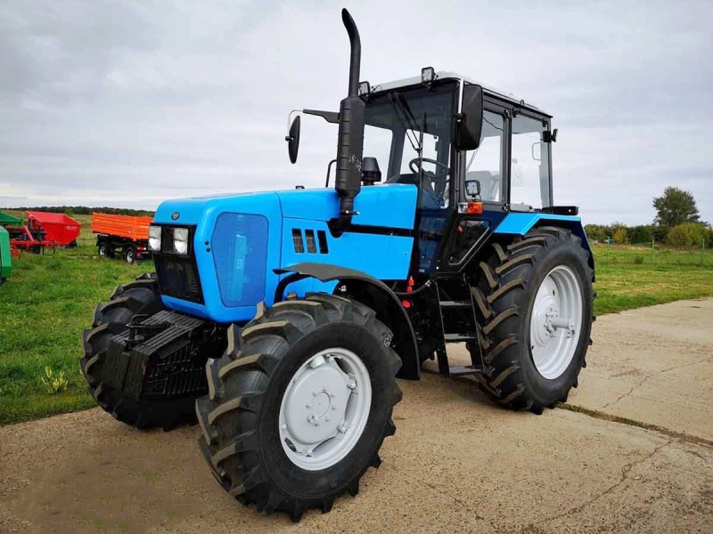

МТЗ Беларус 1221.3

МТЗ Беларус 1221.3 – це потужний колісний трактор, який є однією з найпопулярніших моделей модернізованої серії 1221.
Трактор належить до тягового класу 2,0 і має повний привід з посиленим балочним переднім мостом, що робить його незамінним для важких польових робіт: оранки, глибокого розпушування та роботи з широкозахопними посівними комплексами. Модель має синхронізовану трансмісію (16/8) та потужну гідронавісну систему з двома вертикальними циліндрами, що забезпечує високу вантажопідйомність. Завдяки простоті конструкції та значній тяговій силі, 1221.3 часто називають «бюджетною альтернативою» західним тракторам середньої потужності.
| Параметр | Значення |
|---|---|
| Клас тяги | 2.0 |
| Тип ходової частини | колісний |
| Колісна формула | 4х4 (повний привід) |
| Тип рами | напіврамна конструкція |
| Основне призначення | енергоємні польові роботи (оранка, культивація, посів), транспортні операції та робота з комбінованими агрегатами |
| Параметр | Значення |
|---|---|
| Модель | Д-260.2S2 (ММЗ) |
| Тип двигуна | 6-циліндровий, дизельний з турбонаддувом |
| Спосіб охолодження | рідинне |
| Розташування циліндрів | рядне, вертикальне |
| Робочий об’єм | 7,12 л |
| Діаметр поршня / Хід поршня | 110 × 125 мм |
| Номінальна потужність | 100 кВт (136 к.с.) |
| Номінальні оберти | 2100 об/хв |
| Максимальний крутний момент | 568 Н·м |
| Запас крутного моменту | 25% |
| Параметр | Значення |
|---|---|
| Муфта зчеплення | фрикційна, дводискова, суха |
| Тип КПП | механічна, синхронізована, ступінчаста |
| Кількість передач | 16 вперед / 8 назад (опційно 24/12) |
| Тип реверсу | механічний |
| Діапазон швидкостей (вперед) | 2,1 – 35,0 км/год |
| Вал відбору потужності (ВОМ) | незалежний (540/1000) та синхронний (4,18 об/м шляху) |
| Діапазон | Передача | Теоретична швидкість, км/год | Передаточне число (загальне) | Тягове зусилля, кН |
|---|---|---|---|---|
| I (L) (Повільний) | 1 | 2,10 | 253,5 | 40,00* |
| I (L) (Повільний) | 2 | 2,50 | 212,9 | 40,00* |
| I (L) (Повільний) | 3 | 3,10 | 171,7 | 40,00* |
| I (L) (Повільний) | 4 | 3,80 | 140,1 | 38,50 |
| II (L) (Робочий) | 1 | 5,30 | 100,4 | 27,60 |
| II (L) (Робочий) | 2 | 6,30 | 84,5 | 23,20 |
| II (L) (Робочий) | 3 | 7,80 | 68,2 | 18,70 |
| II (L) (Робочий) | 4 | 9,40 | 56,6 | 15,50 |
| III (H) (Тяговий) | 1 | 8,20 | 64,9 | 17,80 |
| III (H) (Тяговий) | 2 | 9,80 | 54,3 | 14,90 |
| III (H) (Тяговий) | 3 | 12,10 | 44,0 | 12,10 |
| III (H) (Тяговий) | 4 | 14,70 | 36,2 | 9,90 |
| IV (H) (Транспорт) | 1 | 19,50 | 27,3 | 7,50 |
| IV (H) (Транспорт) | 2 | 23,30 | 22,8 | 6,30 |
| IV (H) (Транспорт) | 3 | 28,90 | 18,4 | 5,10 |
| IV (H) (Транспорт) | 4 | 35,00 | 15,2 | 4,20 |
| Параметр | Значення |
|---|---|
| Тип коліс | пневматичні шини низького тиску |
| Колісна формула | 4х4 (повний привід з електрогідравлічним керуванням) |
| Передній міст (ПВМ) | ведучий, балкового типу (з планетарно-циліндричними редукторами) |
| Задній міст | складний, з планетарними кінцевими передачами |
| Типорозмір передніх шин | 420/70 R24 |
| Типорозмір задніх шин | 18.4 R38 |
| Радіус ведучого колеса (заднього) | ~0,88 м |
| Дорожній просвіт | 480 мм |
| Агротехнічний просвіт | 620 мм (під рукавами напівлап) |
| Блокування диференціалу | електрогідравлічне (3 режими: вимкн/авто/увімкн) |
| Рульове управління | гідрооб'ємне (ГОРУ) з двома гідроциліндрами |
| Гальмівна система | дискова (суха або в масляній ванні) |
| Параметр | Значення |
|---|---|
| Під час роботи з навантаженням | 22,0 – 26,5 кг/год |
| Під час холостих переїздів | 8,5 – 10,5 кг/год |
| Під час зупинок (холостий хід) | 1,2 – 1,5 кг/год |
| Параметр | Значення |
|---|---|
| Експлуатаційна маса | 5730 кг |
| Максимально допустима вага | 8000 кг |
| Довжина / Ширина / Висота | 4500 / 2300 / 2850 мм |
| Колісна база | 2760 мм |
| Об’єм паливного баку | 140 л |
| Параметр | Значення |
|---|---|
| Гідравлічна система | роздільно-агрегатна, 51 л/хв (20 МПа) |
| Вантажопідйомність навіски | задньої — 4300 кгс / передньої — 2400 кгс |
| Рульове управління | гідрооб'ємне (ГОРУ), два гідроциліндри |
| Електросистема | 12В (бортова) / 24В (пуск) |
| Особливості | посилена трансмісія та мости розраховані на тривалу роботу з широкозахватними агрегатами |